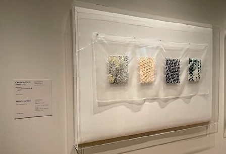
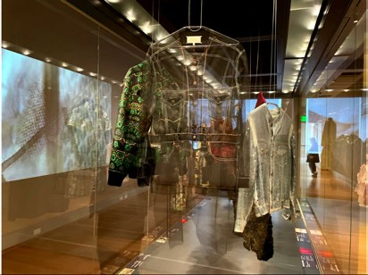
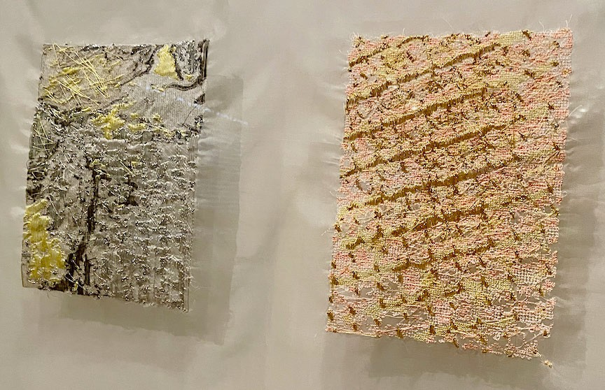

Sensing Fashion
2023



This museum-based research project marked a significant shift in my practice. As Graduate Fellow in Costume and Textiles at the RISD Museum (2022–23), I collaborated with curator Kate Irvin on Sensing Fashion, an exhibition shaped around a major donation of contemporary high-fashion garments. For the exhibit, I developed embroidered samples based on microscopic videos of the garments' surfaces, stitched using an industrial Tajima embroidery machine. The project was part of a larger investigation into whether digital embroidery could convey the sense of wonder often experienced with hand-embroidered work.
Exhibitions
- Sensing Fashion, Donghia Gallery, RISD Museum, Providence, RI, Feb. 11 – July 30, 2023